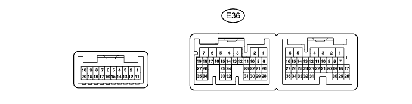
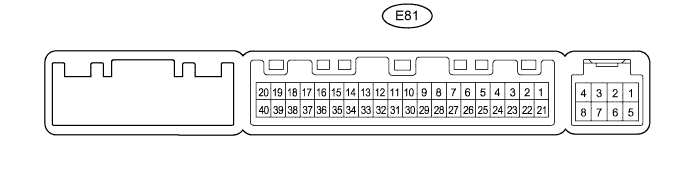

WINDOW DEFOGGER SYSTEM > TERMINALS OF ECU |
| CHECK AIR CONDITIONING AMPLIFIER (w/ Rear air conditioning amplifier) |

Disconnect the E36 air conditioning amplifier connector.
Measure the resistance and voltage according to the value(s) in the table below.
| Terminal No. (Symbol) | Wiring Color | Terminal Description | Condition | Specified Condition |
| E36-5 (IG+) - E36-1 (GND) | G - W-B | Ignition power supply | Engine switch on (IG) | 11 to 14 V |
| Engine switch off | Below 1 V | |||
| E36-6 (+B1) - E36-1 (GND) | R - W-B | Battery power source | Always | 11 to 14 V |
| E36-7 (+B2) - E36-1 (GND) | R - W-B | Battery power source | Always | 11 to 14 V |
| E36-1 (GND) - Body ground | W-B - Body ground | Ground | Always | Below 1 Ω |
Reconnect the E36 air conditioning amplifier connector.
Measure the voltage according to the value(s) in the table below.
| Terminal No. (Symbol) | Wiring Color | Terminal Description | Condition | Specified Condition |
| E36-24 (RDEF) - E36-1 (GND) | G - W-B | Defogger relay | Engine switch on (IG) and defogger switch off | 11 to 14 V |
| Engine switch on (IG) and defogger switch on | Below 1 V |
| CHECK AIR CONDITIONING AMPLIFIER (w/o Rear air conditioning amplifier) |

Disconnect the E81 air conditioning amplifier connector.
Measure the resistance and voltage according to the value(s) in the table below.
| Terminal No. (Symbol) | Wiring Color | Terminal Description | Condition | Specified Condition |
| E81-1 (IG+) - E81-14 (GND) | G - W-B | Ignition power supply | Engine switch on (IG) | 11 to 14 V |
| Engine switch off | Below 1 V | |||
| E81-21 (+B1) - E81-14 (GND) | R - W-B | Battery power source | Always | 11 to 14 V |
| E81-14 (GND) - Body ground | W-B - Body ground | Ground | Always | Below 1 Ω |
Reconnect the E81 air conditioning amplifier connector.
Measure the voltage according to the value(s) in the table below.
| Terminal No. (Symbol) | Wiring Color | Terminal Description | Condition | Specified Condition |
| E81-38 (RDEF) - E81-14 (GND) | G - W-B | Defogger relay | Engine switch on (IG) and defogger switch off | 11 to 14 V |
| Engine switch on (IG) and defogger switch on | Below 1 V |
| CHECK AIR CONDITIONING CONTROL ASSEMBLY (w/o Multi-display) |
Disconnect the F10 air conditioning control assembly connector.
Measure the resistance and voltage according to the value(s) in the table below.
| Terminal No. (Symbol) | Wiring Color | Terminal Description | Condition | Specified Condition |
| F10-7 (IG+) - F10-1 (GND) | G - W-B | Ignition power supply | Engine switch on (IG) | 11 to 14 V |
| Engine switch off | Below 1 V | |||
| F10-1 (GND) - Body ground | W-B - Body ground | Ground | Always | Below 1 Ω |
| CHECK MULTI-DISPLAY |
Disconnect the F28 multi-display connector.
Measure the resistance and voltage according to the value(s) in the table below.
| Terminal No. (Symbol) | Wiring Color | Terminal Description | Condition | Specified Condition |
| F28-3 (IG) - F28-10 (GND1) | G - W-B | Ignition power supply | Engine switch on (IG) | 11 to 14 V |
| Engine switch off | Below 1 V | |||
| F28-10 (GND1) - Body ground | W-B - Body ground | Ground | Always | Below 1 Ω |